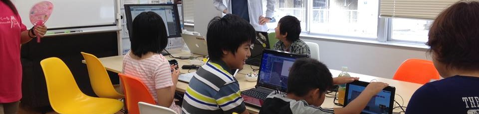

CoderDojo Chiba
CoderDojo Chiba (コーダー道場千葉) は千葉市で開催される小中学生向けプログラミング道場です


CoderDojo Chiba (コーダー道場千葉) は千葉市で開催される小中学生向けプログラミング道場です
CoderDojo とはアイルランドから始まったムーブメントです。
ボランティアと小中学生が一緒になり、プログラミングにはげむ「道場」です。CoderDojo公式(英語)
CoderDojo Chiba は千葉市での活動を中心した CoderDojoです。入門者は、MITメディアラボが開発した
Scratch を使って、メンター (後ろから見守ってくれる人たちです) と一緒にプログラミングにチャレンジします。
CoderDojo Chiba は、プログラミング教室ではありません。自分でやりたいことを見つけ、課題をこなすコミュニティです。
メンターは、参加者が悩んだことにヒントを与えます。教えてはくれませんが、一緒に悩んでくれます。
千葉県で開催されている CoderDojo は、他にも Kashiwa (柏) や Wakaba (若葉) もありますので、そちらも合わせて御覧ください。
開催は、原則月1度の土日祝です。
開催日程などは、Twitter, Facebook Groupおよび、以下のメールマガジンにて告知しております。ぜひご参加ください。
登録後、確認メール(英語)が届きます。確認メール中にある "Yes, subscribe me this list." をクリックすると、登録が完了します。
CoderDojo Chibaはプログラミングに触れてみたい、子どもを中心とした集まりです。
加えて、プログラミングを一緒に楽しみたいという大人の方の参加も可能です。
小学生以下の場合、付き添いの方同伴でお願い致します。
ノートPC (コンピューター操作に慣れていない場合はマウスの持参をオススメいたします)
ノートPCがご用意できない場合は、お気軽にご相談ください。数に限りはありますが、貸出ができます。
無料ですが、寄付により運用されておいます。寄付金の取扱については、こちらを御覧ください。